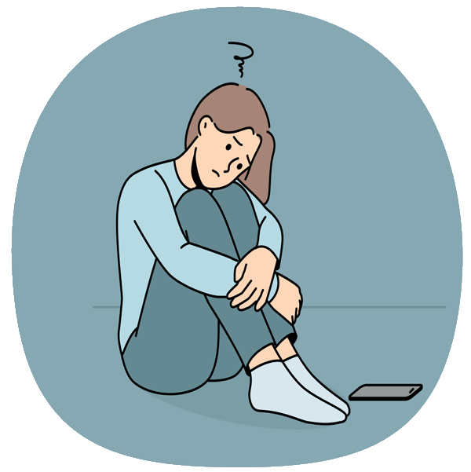

WHAT:
Designing connection through an arts and community app, a UX case study and in-progress MAGWD Capstone project
WHY:
To combat loneliness in young adults, connecting them with art, the people around them, and their physical bodies
PROBLEM STATEMENT
The United States is currently facing an epidemic of loneliness. Social isolation is linked to a significantly increased risk of depression, anxiety, inflammation, heart disease, stroke, type 2 diabetes, and kidney disease as well as lowered ability to fight viruses. Studies show that of the current generations, young adults are the loneliest. This has been attributed to young adult years introducing large social and geographic changes, a lack of community and family connection, and social media use.
Research suggests that artistic expression and appreciation can improve well-being by increasing serotonin, activating the pleasure and rewards systems of the brain, and eliciting feelings of hope for the future. Viewing art is said to have benefits similar to those of meditation or mindfulness exercises. Physical activity has also been shown to improve both physical and mental health. Through this project, I seek to combine art, physical activity, and gamified community-building strategies to combat social isolation in young adults.
MOODBOARD AND DESCRIPTION

Some cities host gallery nights or art walks on a yearly or monthly basis. Through considering the joy and connection I've witnessed at such events, paired with the playful motivation to get active I've noticed users of Pokemon Go experiencing, the idea for ArtWalk was born.
ArtWalk is an app designed to connect people with the art and humans in their surrounding area. With combination of fitness and social goals, along with an engaging interface, users will be motivated to explore the world outside their font door. Rather than encouraging comparison culture which can result in feelings of isolation, ArtWalk encourages users to seek meaningful connection and community.
Upon opening the app, new users will answer a series of onboarding questions which will determine their location, physical activity goals, social goals, and arts-related interests. Then, each time users access the app, they will be able to choose between generating a personalized walking art tour and browsing through curated arts-related meetups to attend. The app will feature challenges and other gamified elements in order to motivate and engage users. Whether they're interested in connecting with people they already know, having a solo experience in public art spaces, or attending social events to meet new people, ArtWalk has users covered.
The UI will be bright, playful, and engaging. Hand-drawn illustrations and textures mimicking art supplies like paint and paper will connect to the app's theme and work to challenge the conventional smooth, flat experience users may expect from an app. This is intentionally echoing the way the functionality of the app works to challenge the superficial experiences users may expect from a social app. In all ways, ArtWalk seeks to add depth, color, and texture to the lives of its users.
ArtWalk is an in-process project, as I am currently deepening my work on it through the MAGWD Capstone course. Read on to see where the journey has taken me so far.
MARKET RESEARCH
Through market research, I was able to discover and study any similar apps that currently exist. I also researched gallery nights and art walks in various cities as well as mental health, the impacts of similar apps, the loneliness epidemic the US is experiencing, and how technology can be reframed as a connector rather than an isolator.
Of the similar apps I have been able to find, none have combined all of the elements I intend to include in Art Walk. Many focus on one specific geographic location or type of art (i.e. Greater Palm Springs and public outdoor art). They also lack the integration of fitness and art experience tracking and goal setting.
UX RESEARCH
Interviews and SurveysFor my first round of interviews and surveys, I had 19 participants. Some were interviewed separately, in a face-to-face setting, while others took an online survey. They were asked questions about art, their mental health, technology and social media use, physical activity, and social preferences.
I then set out to gather data about the artists and arts organizations that could provide the very important art piece of ArtWalk. To gain a better understanding of users on the arts input side rather than the general consumer side of the app, I interviewed Morgen Ruff, who works with NEMAA as one of the producers of Art-A-Whirl. As another method of gathering data about artists, arts administrators, and arts business owners, I have been circulating a survey I created with Google Forms.
EthnographyI sat in a busy area near the cafe on a university campus and observed the interactions and behavior taking place there.
Diary StudyA group of four participants logged their human interactions and technological interactions over the span of 2 weeks, tracking their feelings after each.
USER TESTING
The name Art Walk connects the inspiration I have taken from art walks and gallery nights with the physical act of walking from art experience to art experience.
Above are my early logo sketches. I chose the combination of Ducky and Doublebass as the two fonts for the logo, inflating and adding shine to the Art portion of the logo. My thought behind these choices is to make the Art portion of the logo look bright, fluid, and artistic, almost reminiscent of paint being squeezed from a paint tube while the Walk portion has movement and brings up mental associations of movement on sidewalks or streets. Final logo and color palette shown below.
COLOR PALETTE

The color palette is inspired by the vibrant public murals users may see on their walks.
LOGO SUITE


The primary logotype is featured in a variety of color variations for use on different backgrounds.
The monogram logo is also part of the new and improved logo suite. It can be used in black or black with hot pink as shown above, or in a pattern of black and pink against light blue as shown below.
The monogram logo pattern is excellent for use in merchandise, such as the hoodie modeled by the French bulldog above. I intend to use the dog mockup in an ad, encouraging dog lovers to bring their four legged friends with them on outdoor ArtWalks.
ICONS AND BUTTONS
It was important to me that the icons match the artistic spirit of the app, both in style and texture. To achieve this, I designed them in Procreate on the iPad. First, I added a layer of watercolor paper texture. Then, using the watercolor brush, I created added color and painted texture. I created three circular backgrounds in this style, in ArtWalk's signature blue, pink, and green colors. I then duplicated those painted backgrounds and used them behind the icon images, which I hand drew in Procreate with another style of paint brush. The circular painted backgrounds unite the various icons in shape and size, and add another way to explore use cases for color.
Additional icons with the monogram logo show up during the Walk journey. Users are able to use them to help identify where they are on the ArtWalk map. They can also click on the version with the gradient brush stroke around it when it appears to view information about the art stop they are visiting. The gradient brush stroke colors are made of ArtWalk's pink, blue, and green.
The buttons are featured during the onboarding sequence, and feature the watercolor backgrounds seen in the hand drawn icons. When selected, the button variant uses the pink, blue, and green gradient brush stroke style.
Arrows were designed in 3D pink material to tie in with the 3D wet paint feel of the "walk" portion of ArtWalk's logotype.

Pictured above, a user following the in-app directions for their personalized Art Walk tour arrives at an art stop.
Once the user arrives, the screen shifts from showing the map or street view to showing an image of the art experience they have arrived at. An alert message also appears on the screen providing information about what they are about to experience.
For art stops containing multiple pieces, such as museums or galleries, the alert will appear as shown in the photo above.
For art stops that involve single pieces, such as public sculptures, murals, or augmented reality pieces, an option will be available to view and save separate artist bio and the artist’s website/ social media. This option may also be available for larger exhibitions or shows in museums and galleries dedicated to single artists.
Further details regarding the functionality of the app are available in the following images and Figma prototype.